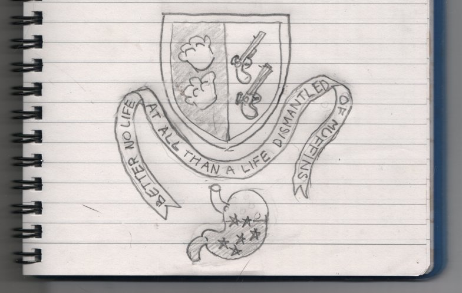

Sunday, March the 8th, 2009
back to: title, date or indexes
Far away in the Antipodes, Glyn Webster has been pondering the terrible choice the lieutenant-colonel had to make between the muffins, on one side of his breakfast table, and the loaded pistols on the other. The result of Mr Webster's exercising of his cranial integuments is this splendid heraldic device:

I pointed out to Mr Webster that the muffins shown were unlikely to be the type of muffins which caused the lieutenant-colonel his dyspeptic atrocities. When you print out the device—and note I say “when”, not “if”—you may use Tippex™ and a pencil to adjust the muffins to your preferred muffin-type should you so desire. But remember the religious ruling which states “uncertainty of muffin-type is no great sin”.
Incidentally, Mr Webster has been reading Zoonomia by Erasmus Darwin, and has found “many alarming stories about pistols”, but not the one involving the lieutenant-colonel and his muffins. Was De Quincey making it up?